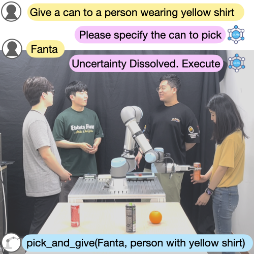

- [July 2024]: Our paper about persona-driven human robot interaction Robotics and Automation letters! We are looking forward to presenting our work at ICRA 2025.
- [May 2024]: Our paper about socially aware navigation has been accepted to RO-MAN 2024.
- [April 2024 - October 2024]: I have started internship at NAVER Cloud AI Lab, advised by Sangdoo Yun.
- [January 2024]: Our paper about semi-autonomous teleoperation with physical simulators and large language models has been accepted to ICRA 2024!
- [November 2023]: Our paper about uncertainty estimation from large language models has been accepted to Robotics and Automation letters! We are looking forward to presenting our work at ICRA 2024.
- [Feburary 2023]: I am presenting our work about vision-based navigation at NAVER Tech Talk.
- [January 2023]: Our paper about active visual search has been accepted to ICRA 2023.
- [September 2022 - December 2022]: I am heading to Queens University, Canada as visiting researcher, advised by Matthew Pan. This program is funded by Mitacs Globalink Research Award to Canada.
- [May 2023]: Our paper about abnormal driving dataset has been accepted to IROS 2022.
- [January 2022]: Our paper about semi-autonomous teleoperation for non-prehensile manipulations has been accepted to ICRA 2022.
News
Publications
VIM: Versatile Motion-Language Models for Multi-Turn Interactive Agents
VIM (Versatile Interactive Motion language model) integrates language and motion modalities to understand, generate, and control interactive motions in multi-turn conversations, addressing the scarcity of multi-turn interactive motion data with a synthetic dataset, INTER-MT2.
Towards Embedding Dynamic Personas in Interactive Robots: Masquerading Animated Social Kinematics (MASK)
Robotics and Automation Letters, 2024
International Conference of Robotics and Automation (ICRA), 2025
International Conference of Robotics and Automation (ICRA), 2025
Employing a persona-driven interactive framework to animate an anthropomorphic robotic system, enhancing audience engagement through non-verbal interactions
SPOTS: Stable Placement of Objects with Reasoning in Semi-Autonomous Teleoperation Systems
International Conference of Robotics and Automation (ICRA), 2024
Introducing a teleoperation framework that enhances the 'place' task in robotics by combining simulation-driven stability verification with semantic reasoning from large language models.

CLARA: Classifying and Disambiguating User Commands for Reliable Interactive Robotic Agents
Robotics and Automation Letters (RA-L), 2024,
International Conference of Robotics and Automation (ICRA), 2024
International Conference of Robotics and Automation (ICRA), 2024
Introducing a method for interactive robotic agents using large language models (LLMs) to classify user commands as clear, ambiguous, or infeasible, enhancing reliability by leveraging uncertainty estimation, situational awareness, and user interaction for disambiguation.

Text-based Human Search and Approach using a Robot Dog
International Conference on Robot and Human Interactive Communication (RO-MAN), 2024.
A robotic system using textual descriptions for human search and approach, combining language models for identifying targets and a hybrid learning framework for generating human-friendly robotic motions
Zero-shot Active Visual Search (ZAVIS): Intelligent Object Search for Robotic Assistants
International Conference of Robotics and Automation (ICRA), 2023
A mobile robot system that uses free-form text for target object search using commonsene knowledge.
Elucidating Robust Learning with Uncertainty-Aware Corruption Pattern Estimation
Pattern Recognition, 2023
Uncertainty-aware robust learning
Towards Defensive Autonomous Driving: Collecting and Probing Driving Demonstrations of Mixed Qualities
The 2022 IEEE/RSJ International Conference on Intelligent Robots and Systems (IROS), 2022
R3 Driving Dataset, a novel collection of driving data categorizing abnormal behaviors to enhance OOD detection for autonomous driving.
Learning Robot Structure and Motion Embeddings using Graph Neural Networks
ICML 2022 Workshop on Machine Learning for Computational Design (ICML'22-ML4CompDesign), 2022
Using graph neural networks (GNN) to find compact, low-dimensional embeddings of a robot’s kinematic structure and pose data.
Semi-Autonomous Teleoperation via Learning Non-Prehensile Manipulation Skills
The 2022 IEEE Conference of Robotics and Automation (ICRA), 2022
Semi-Autonomous Teleoperation framework for non-prehensile manipulation tasks.
Reviewing activities
- • I serve as a reviewer at ICRA 2025.
- • I serve as a reviewer at CHI 2025.
- • I serve as a reviewer at RA-L 2024.
- • I serve as a reviewer at NEURIPS Workshop (Video-Language Models) 2025.
- • I serve as a reviewer at IROS 2024.